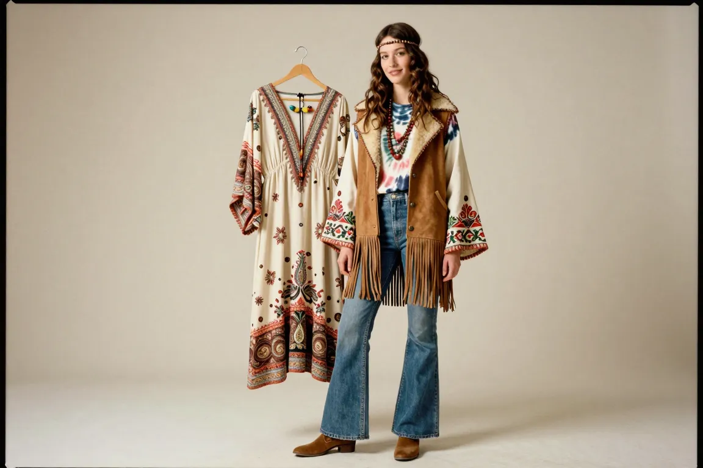

Платье хиппи-богема
мода · 1966–1975 · также: Мода хиппи, Платье «власть цветов», Бохо-платье, Платье «лета любви»
Свободное многослойное платье контркультуры 1966–1975 годов. Длинный хлопок и бархат, индийские принты, вышивка, тай-дай, расклёшенные джинсы, замшевые жилеты и афганское пальто.

Главная идея
Одежда свободна от фабрики и магазинных правил: ручная, мировая, свободная на теле и богатая цветом.
Принципы дизайна
- Кройте платье свободно от плеча, без вытачек, и пускайте до щиколотки или до середины икры.
- Начинайте клёш брюк от колена так, чтобы по низу выходило 25–30 см.
- Выбирайте мягкую натуральную ткань, такую как индийский хлопковый муслин, бархат или замша, а не жёсткий синтетик.
- Носите три и более вещи слоями, например жилет, блузку и длинную юбку или платье.
- Красьте вручную способом тай-дай или в ванне индиго, чтобы ни две вещи не совпали.
- Украшайте вышивкой, бисером, нашивками и блочными принтами из Индии и Ближнего Востока.
- Носите вещь поношенной и заштопанной; добавляйте бубенчики, повязку на голову и босые ноги или сандалии.
Антипаттерны
- Строгий пошив с подбитыми плечами
- Короткое жёсткое платье в стиле мод
- Простые корпоративные цвета серого и тёмно-синего
- Синтетический блеск и винил
- Новый, отглаженный и фабрично чистый вид
- Жёсткая чёрно-белая геометрия
Палитра
Родословная
- Перекликается с
- Богемный веб, Гоблинкор, Психоделика, Психоделический концертный плакат
- Скрещивается с
- Глэм-туфля на платформе
- Бунт против
- Стиль Лиги плюща, Мод и мини
- Вызвал реакцию
- Пауэр-дрессинг, Панк-мода
Использовать
SKILL.md · tokens.css · исходный JSON · открыть в демо